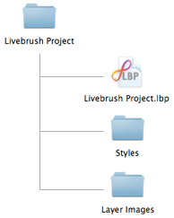
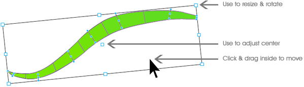
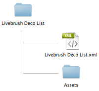
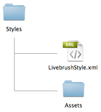

Online Documentation
Getting Started
Drawing
Livebrush is a drawing program. The unique motion-enabled brush tool is the main drawing tool in Livebrush. It's a 'live brush' because it responds to your movement by adding a little of its own. Give it a try! It's much simpler than it sounds.
The brush's cousin is the pen tool. They can both be used to draw lines. However, the pen tool is not 'live' like the brush tool. The pen tool is mainly used to modify lines created with the brush tool.
While the brush tool lets you create lines, it's the brush styles that make one line look different from the next. And as far as we're concerned, that's where the fun begins.
Project

Livebrush saves your drawings and styles in a Livebrush Project. A project is simply a folder with an .lbp file and two folders: Layer Images, and Styles. The project folder and these sub-folders contain all the information and assets used in your project. When saving a new project, no file extension is needed. The name you enter will become the project and folder name.
Note: Every project folder is managed by Livebrush. If you make changes to the files and folders in your project folder, your project may become corrupt.
When opening or importing a project, select the .lbp file inside the project folder.
Editing

Livebrush organizes graphics on layers. Use the layers panel to alter the stacking order, to remove, and transform layers. The layers panel lets you change the color and opacity of any layer (except the background).
The transform tool lets you edit lines and layers (individually or in groups). For example, draw a few lines and select the transform tool from the toolbar. Then click one or more layers in the layers panel. You will now be able to move, rotate, and resize those layers.
Using the transform tool, you can select multiple points of a line by clicking outside of the line and dragging over the desired points. You can also hold the SHIFT key to manually select multiple points individually. Note that a single line layer must be selected in order to edit individual points.
Note: Only the pen tool can add points to a line.
Share
While using Livebrush for all kinds of personal and professional projects, you may also be interested in sharing your work with others on the Livebrush forum.
Why share? Because your mother said so!
But it's also because sharing is good for everyone. Don't think of it as a one-way street. By contributing your work, you should feel free to play, collaborate, and remix others' work as well.
Livebrush encourages you to share projects, styles and decorations. Continue reading to learn how to import and export your work. Then visit the forums to start sharing!
Export

The export menu (File > Export) lets you export various parts of your project:
- Image: Exports an image of all visible layers.
- Layer Image: Exports an image of one or more selected layers.
- Brush Style: Exports the selected style with all required assets. This action creates a folder structure with an .xml file and assets folder. Be sure to include the xml and assets folder when sharing the style.
- Deco List: Exports a deco list with all required assets. This action creates a folder structure with an .xml file and an asset folder. Be sure to include the xml and assets folder when sharing.
Note: If a style has no decorations, you only need to share the .xml file.
Import

The import menu (File > Import) lets you import various parts of a project:
- Layer Image: Imports an image (JPEG, GIF, PNF) or SWF above the selected layer.
- Decoration: Imports an image (JPEG, GIF, PNF) or SWF to the decoration list of the current style.
- Brush Style: Imports a brush style and any included decoration assets.
- Deco List: Imports a list of decoration assets to the selected style.
- Input SWF: Imports a SWF file to be used as a dynamic brush style input behavior.
- Project: Imports all of that projects the layers, styles, and style decoration assets into the current project.